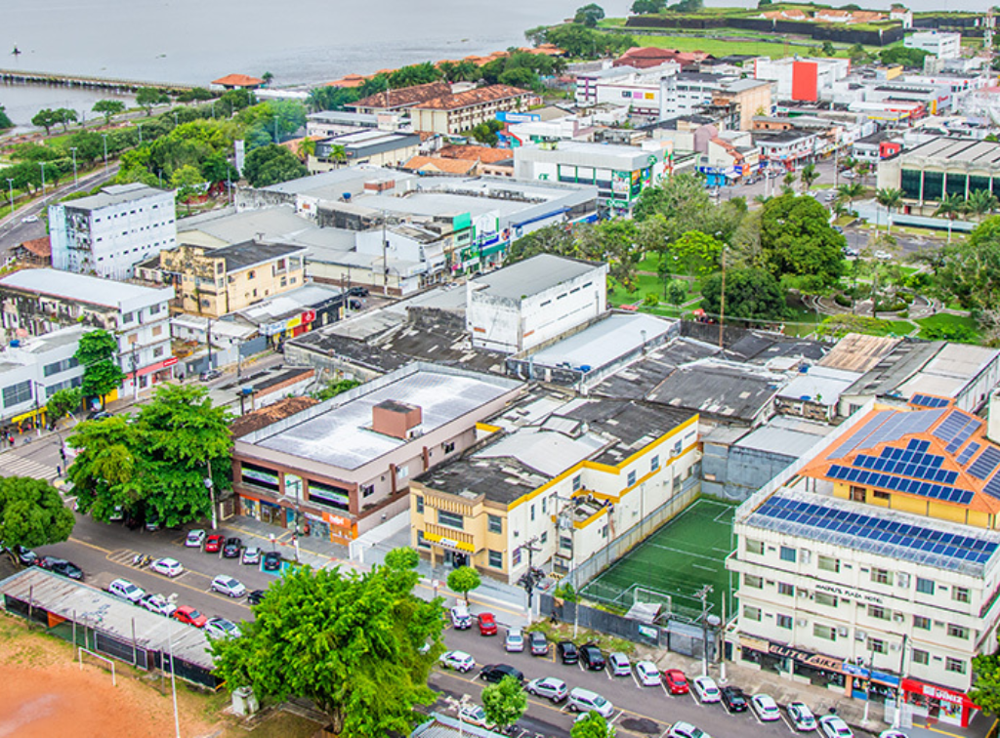

Amapá é um estado localizado na Região Norte do Brasil, fazendo fronteira com a Guiana Francesa, o Pará e o Oceano Atlântico. Sua capital é Macapá. O estado é conhecido por possuir grande parte de seu território coberto pela Floresta Amazônica, apresentando clima equatorial, quente e úmido durante quase todo o ano. Além disso, o Amapá é atravessado pela Linha do Equador, sendo um dos poucos estados brasileiros cortados por ela. A economia do Amapá baseia-se no extrativismo vegetal e mineral, na pesca, na agropecuária e no comércio. A exploração de minerais, como manganês e ouro, também possui importância econômica para a região. O estado apresenta grande riqueza natural e várias áreas de preservação ambiental, protegendo a biodiversidade amazônica.
